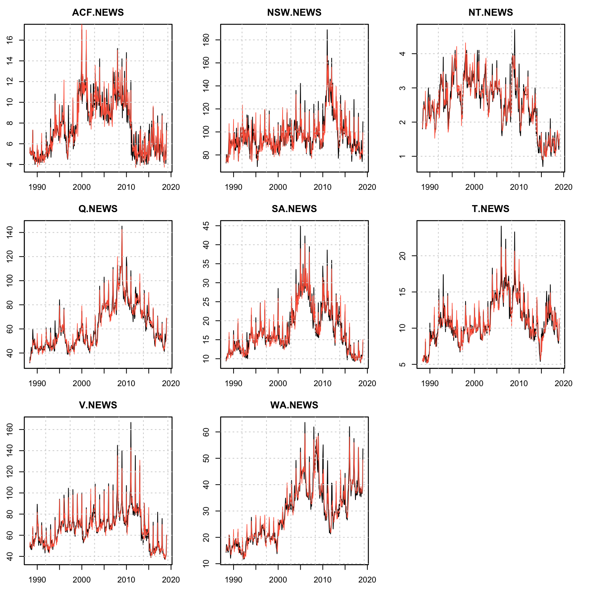
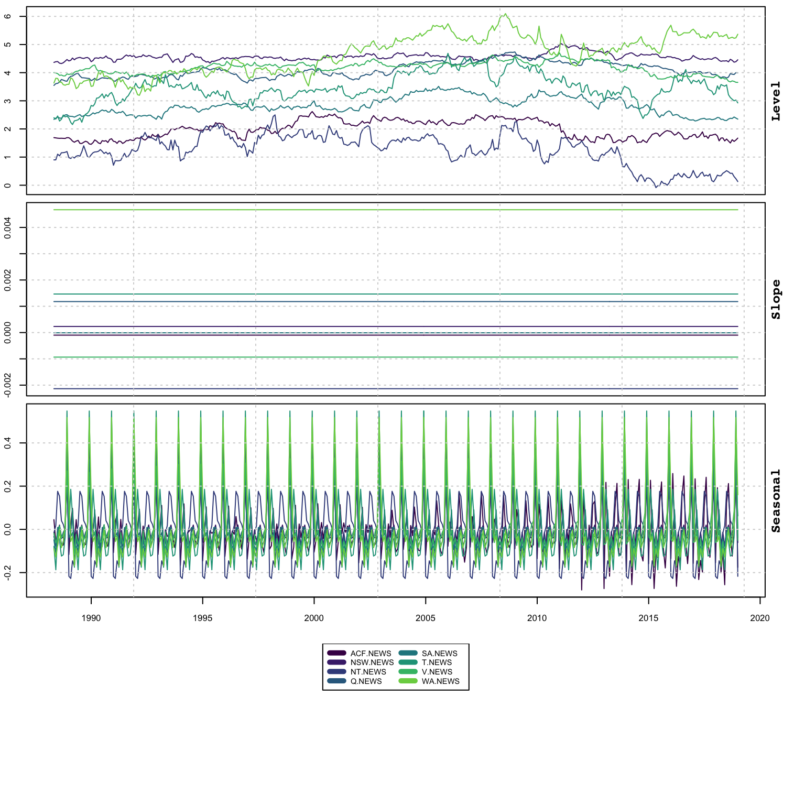
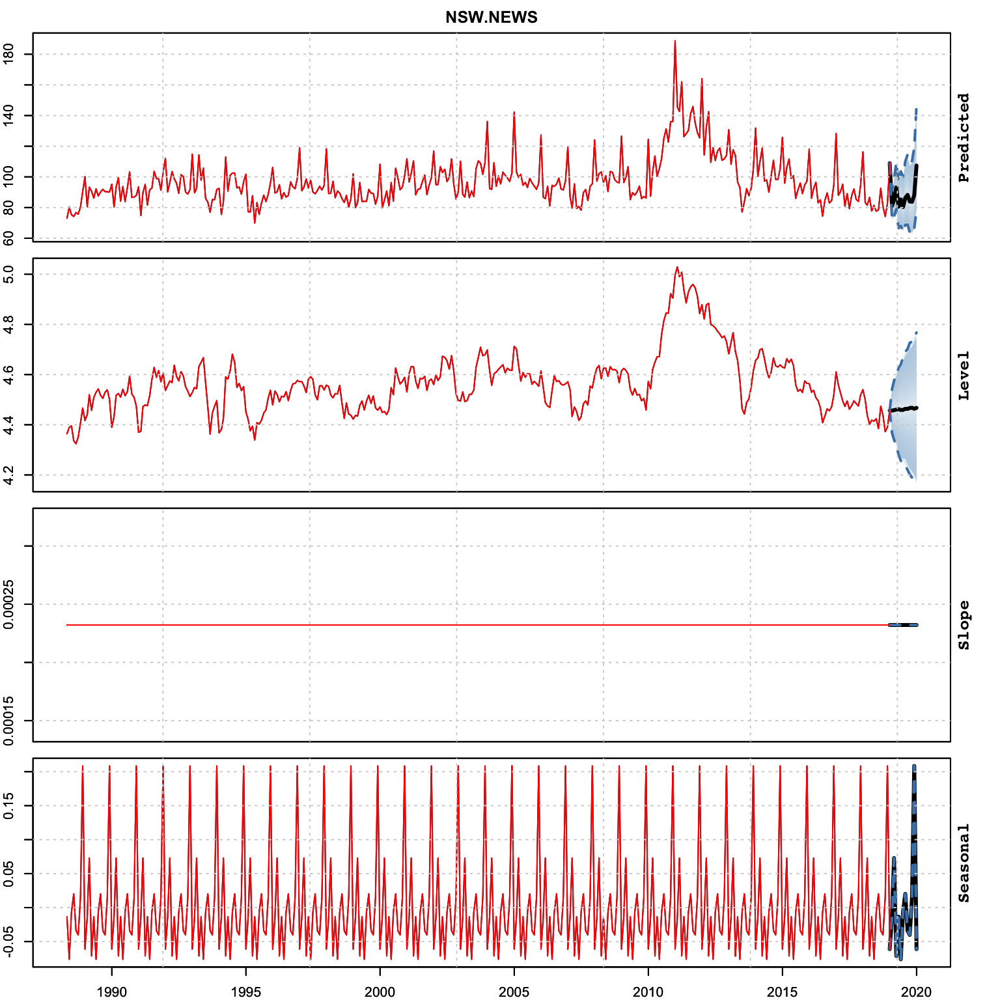
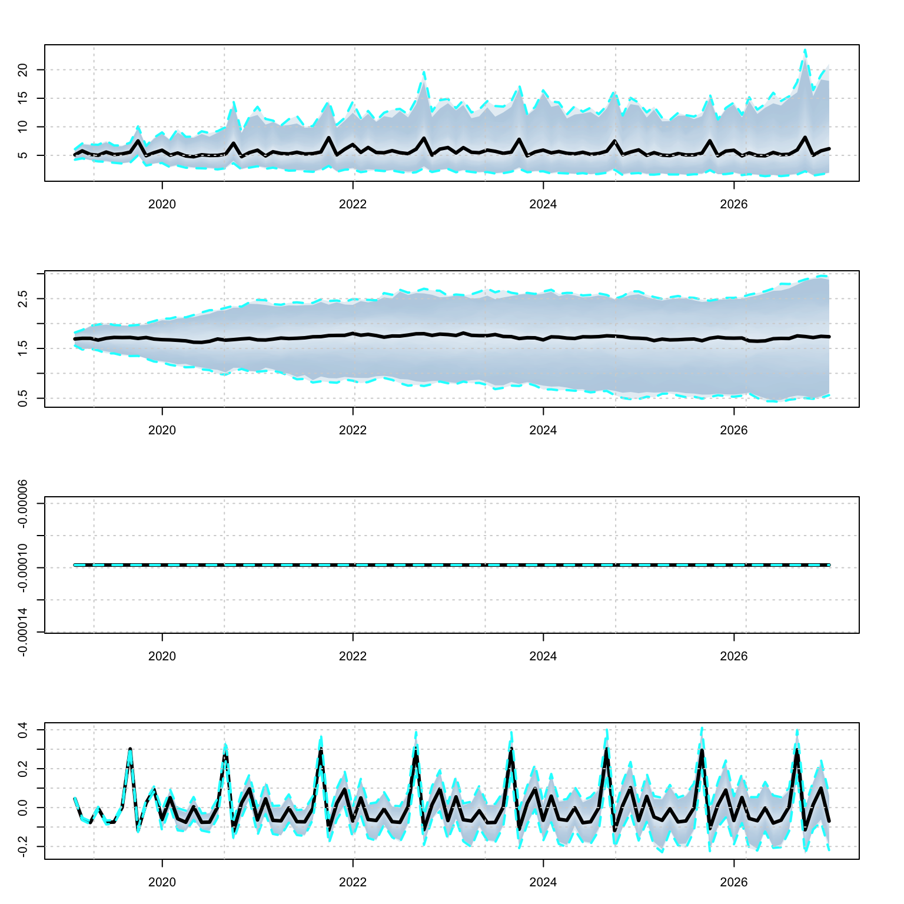
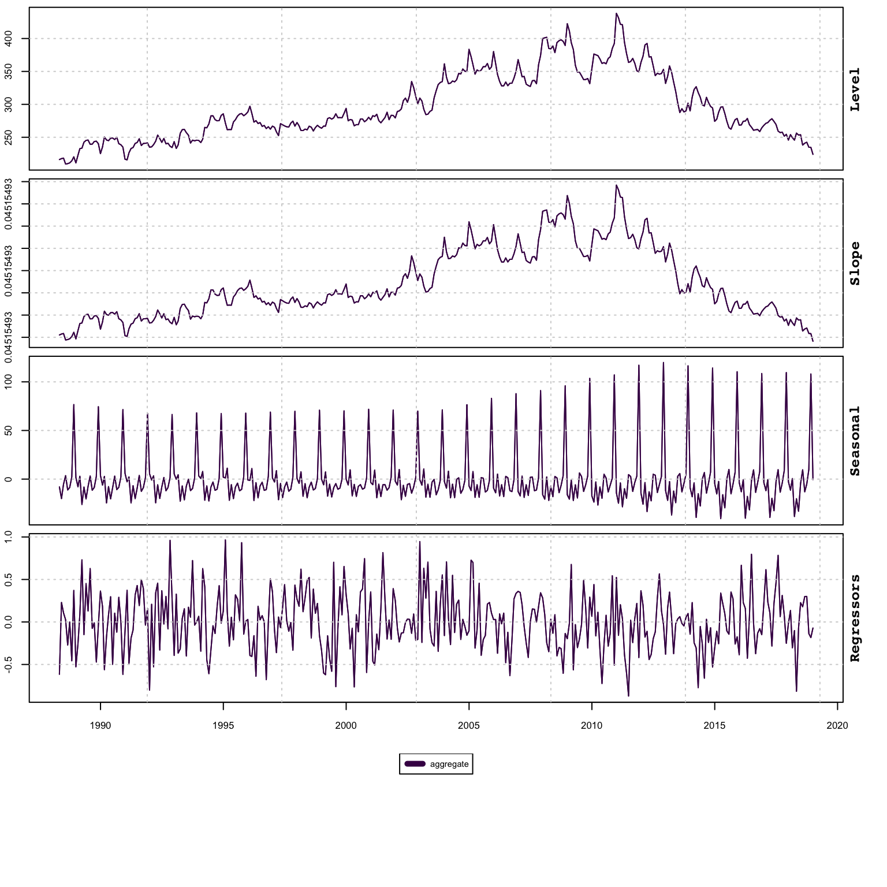
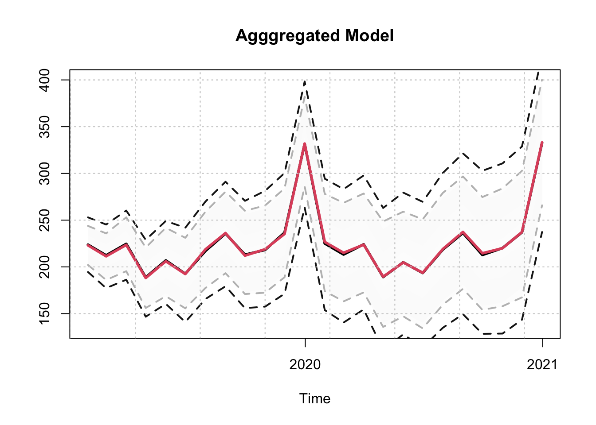
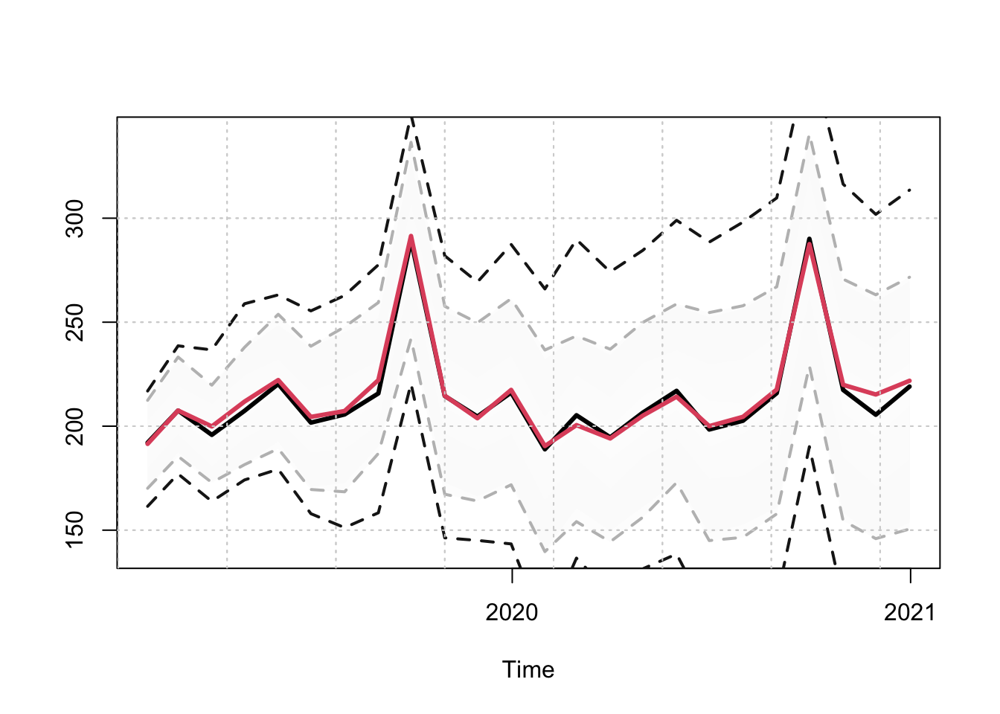

Chapter 7 tsvets package
7.1 Introduction
The vector exponential additive smoothing model (Vector ETS), introduced in (De Silva, Hyndman, and Snyder 2010b) naturally generalizes the univariate framework with a great deal of flexibility on the dynamics of the unobserved components. The dynamics of the states can be common, diagonal, grouped or fully parameterized allowing for a rich set of patterns to be captured. The tsvets package implements a more general and flexible version based on (Athanasopoulos and Silva 2012), with methods for estimation, inference, visualization, forecasting as well as aggregation.
Let the vector of N series at time t, \(\bf{y}_t\) be represented as a linear additive combination of their unobserved level, slope and seasonal (with frequency m) components, \(\bf{l}_{t-1}\), \(\bf{b}_{t-1}\) and \(\bf{s}_{t-m}\) respectively. Formally, the conditional mean of \(\bf{\hat y}_t\) is given by:
\[\begin{equation} \bf{\hat y}_t = \bf{l}_{t - 1} + \Phi\bf{b}_{t - 1} + \bf{s}_{t - m}, \tag{7.1} \end{equation}\]
where \(\Phi\) is the \(N\times N\) matrix of dampening parameters. In its reduced form, the model without seasonality is equivalent to a VARIMA(1,2,2) model, and \(\Phi\) becomes the matrix of first order autoregressive coefficients.
The 1 step ahead forecast errors, \(\boldsymbol{\varepsilon}_t\) follow a multivariate Normal distribution :
\[\begin{equation} {\boldsymbol{\varepsilon} _t} = {\bf{y}_t} - {{\bf{\hat y}}_t},\quad {\boldsymbol{\varepsilon} _t} \sim {\bf{N}}\left( {{\bf{0}},\Sigma } \right). \tag{7.2} \end{equation}\]
The state equations have the following dynamics:
\[\begin{equation} \begin{array}{l} {\bf{l}_t} = {\bf{l}_{t - 1}} + \Phi {\bf{b}_{t - 1}} + {\bf{A}}{\boldsymbol{\varepsilon}_t},\\ {\bf{b}_t} = \Phi {\bf{b}_{t - 1}} + {\bf{B}}{\boldsymbol{\varepsilon}_t},\\ {\bf{s}_t} = {\bf{s}_{t - m}} + {G_1}K{\boldsymbol{\varepsilon}_t},\\ {\bf{s}_{t - m}} = {\bf{s}_{t - i}} + {G_2}K{\boldsymbol{\varepsilon}_t} \end{array} \tag{7.3} \end{equation}\]
where the matrices \(\mathbf{A}\), \(\mathbf{B}\) and \(\mathbf{K}\) represent the adjustment of the vector components to the errors, and can be diagonal, fully parameterized or scalar (common adjustment).
In vector innovations state space form, the system can be written as follows:
\[\begin{equation} \begin{array}{l} {\bf{y}_t} = H{\bf{x}_{t - 1}} + {\boldsymbol{\varepsilon}_t},\\ {\bf{x}_t} = F{\bf{x}_{t - 1}} + GA{\boldsymbol{\varepsilon}_t} \end{array} \tag{7.4} \end{equation}\]
where the matrices \(H\), \(F\), \(G\) and \(A\) are composed as follows:
\[\begin{equation} \mathop H\limits_{\left( {m + 2} \right)N \times N} = \left[ {\begin{array}{*{20}{c}} {{I_N}}\\ {{I_N}}\\ {{0_{N \times N}}}\\ \vdots \\ {{0_{N \times N}}}\\ {{I_N}} \end{array}} \right],\quad \mathop A\limits_{\left( {m + 2} \right)N \times N} = \left[ {\begin{array}{*{20}{c}} {\bf{A}}\\ {\bf{B}}\\ {\bf{K}}\\ \vdots \\ \vdots \\ {\bf{K}} \end{array}} \right] \tag{7.5} \end{equation}\]
\[\begin{equation} \mathop F\limits_{\left( {m + 2} \right)N \times \left( {m + 2} \right)N} = \left[ {\begin{array}{*{20}{c}} {{I_N}}&{{I_N}}&{{0_{N \times mN}}}\\ {{0_{N \times N}}}&{{\Phi _N}}&{{0_{N \times mN}}}\\ {{0_{mN \times N}}}&{{0_{mN \times N}}}&{\tilde F \otimes {I_N}} \end{array}} \right],\mathop {\tilde F}\limits_{m \times m} = \left[ {\begin{array}{*{20}{c}} 0&0&0& \cdots &0&1\\ 1&0&0& \cdots &0&0\\ 0&1&0& \cdots &0&0\\ \vdots & \vdots & \vdots & \ddots & \vdots & \vdots \\ 0&0&0& \cdots &1&0 \end{array}} \right] \tag{7.6} \end{equation}\]
\[\begin{equation} \mathop G\limits_{\left( {m + 2} \right)N \times \left( {m + 2} \right)N} = \left[ {\begin{array}{*{20}{c}} {{I_N}}&{{0_{N \times N}}}&{{0_{N \times mN}}}\\ {{0_{N \times N}}}&{{I_N}}&{{0_{N \times mN}}}\\ {{0_{mN \times N}}}&{{0_{mN \times N}}}&{\tilde G \otimes {I_N}} \end{array}} \right],\quad \mathop {\tilde G}\limits_{m \times m} = \left[ {\begin{array}{*{20}{c}} {\frac{{m - 1}}{m}}&0& \cdots &0&0\\ 0&{ - \frac{1}{m}}& \cdots &0&0\\ 0&0&{ - \frac{1}{m}}&0&0\\ \vdots & \vdots & \vdots & \ddots & \vdots \\ 0&0&0& \cdots &{ - \frac{1}{m}} \end{array}} \right] \tag{7.7} \end{equation}\]
\[\begin{equation} \mathop {{\bf{x}_t}}\limits_{\left( {m + 2} \right)N \times N} = \left[ {\begin{array}{*{20}{c}} {{\bf{l}_t}}\\ {{\bf{b}_t}}\\ {{\bf{s}_t}}\\ \vdots \\ {{\bf{s}_{t - m + 2}}}\\ {{\bf{s}_{t - m + 1}}} \end{array}} \right] \tag{7.8} \end{equation}\]
The values in the seasonal matrix \(\tilde G\) represent normalization terms which ensure that the seasonal component adds to zero throughout the updating process without becoming contaminated by the level component.
7.2 Inclusion of External Regressors
We augment the model by the ability to include external regressors (\(z_t\)) such that:
\[\begin{equation} \begin{array}{l} {\bf{y}_t} = H{\bf{x}_{t - 1}} + \mathbf{W}\bf{z}_t + {\boldsymbol{\varepsilon}_t},\\ {\bf{x}_t} = F{\bf{x}_{t - 1}} + GA{\boldsymbol{\varepsilon}_t} \end{array} \tag{7.9} \end{equation}\]
where the \(W\) is the matrix of coefficients which is time invariant. The xreg_include argument in the vets_modelspec function is a design matrix which allows one to define which coefficients should be set to zero, which should be estimated individually as well as which should be pooled (see the documentation for more details). The index on \(\bf{z}\) is \(t\) and not \(t-1\) and it is left to the user to pre-lag any regressors passed to the function. At present, pooling is global and we do not allow group based pooling. However, this could be achieved by careful replication of the regressor, setting betas to zero for all groups minus the group where pooling is required. This may change in the future is we decide to allow group based pooling.
7.3 Log Likelihood
The log likelihood (\(L\)) of the model follows from the assumption that the innovations \(\boldsymbol{\varepsilon_t}\sim N\left(\bf{0}, \Sigma\right)\), leading to the following function:
\[\begin{equation} L\left(\boldsymbol{\theta} \right) = \frac{T}{2}\left( {N\log \left( {2\pi } \right) + N\log \left| \Sigma \right|} \right) - \frac{1}{2}\sum\limits_{t = 1}^T {\boldsymbol{\varepsilon_t}{\Sigma ^{ - 1}}\boldsymbol{\varepsilon_t}}, \tag{7.10} \end{equation}\]
where \(\boldsymbol{\theta}\) is the vector of parameters being optimized. We also concentrate out the parameters of the covariance matrix by using its ML estimator
\[\begin{equation} \hat \Sigma = \frac{1}{T}\sum\limits_{t = 1}^T {{\boldsymbol{\varepsilon}_t}{{\boldsymbol{\varepsilon}'}_t}}. \tag{7.11} \end{equation}\]
Therefore, the vector ETS log likelihood is proportional to
\[\begin{equation} L\left(\boldsymbol{\theta} \right) \propto \sum\limits_{t = 1}^T {{{\boldsymbol{\varepsilon}'}_t}{{\hat \Sigma }^{ - 1}}{\boldsymbol{\varepsilon}_t}}, \tag{7.12} \end{equation}\]
which requires looping through each \(t\) to calculate the quadratic form which is expensive. Instead, we can make use of the following relationship, assuming positive or positive-semi-definite \(\hat \Sigma\), \({\hat\Sigma ^{ - 1}} = Q\Lambda^{-1} Q'\)17, and thus \({\varepsilon _t} = Q{\bf{u}_t}\), where \(\bf{u}_t\) are the projections onto the eigenvectors \(Q\). The negative of the log likelihood can be represented as:
\[\begin{equation} L\left( \boldsymbol{\theta} \right) = \frac{1}{2}T\left( {N\log 2\pi - \log \left| {\hat \Sigma } \right|} \right) + \frac{1}{2}{{{\bf{1'}}}_T}\left( {{{\left( {\varepsilon Q} \right)}^2}\frac{1}{\lambda }} \right) \tag{7.13} \end{equation}\]
where we have used the relation \(Q^{-1} = Q'\) due to \(\hat{\Sigma}\) being symmetric.
Additionally, we constrain the N+1 largest eigenvalues (\(\lambda_s\)) to be less than 1 to ensure invertibility of the system, such that
\[\begin{equation} {\lambda _s}\left( D \right) < 1,D = F - GAH. \tag{7.14} \end{equation}\]
This is added as a soft barrier constraint. The diagonal elements of the level, slope, dampening and seasonal matrices are bounded between 0 and 1, while the off diagonal elements are allowed to vary between -1 and 1.18
Finally, the initial seed values for each of the states are approximated using the heuristic approach from the univariate ETS model as described in Section 5.5.2.
7.4 Dependence Structure
While Equation (6.10) assumes a full covariance matrix, allowing contemporaneous associations among the residuals, we also offer 3 additional estimators for the dependence structure: diagonal covariance, equicorrelation and shrinkage covariance based on the estimator of (Ledoit and Wolf 2004).
7.4.1 Diagonal Covariance
The diagonal covariance matrix is the one used by (Athanasopoulos and Silva 2012), and leads to the fastest estimation. In this case, the log likelihood is greatly simplified and equal to
\[\begin{equation} \frac{T}{2}\left( {N\log \left( {2\pi } \right) + N\log \left| \Sigma \right|} \right) - \frac{1}{2}\sum\limits_{t = 1}^T {\sum\limits_{i = 1}^N {\varepsilon _{it}^2/\sigma _i^2} }. \tag{7.15} \end{equation}\]
7.4.2 Equicorrelation
The equicorrelation covariance assumes that the correlation across all series is set to some common value \(\rho\). The correlation matrix \(\bf{R}\) can be calculated as
\[\begin{equation} {\bf{R}} = \rho {\bf{11'}} + \left( {1 - \rho } \right){\bf{I}}, \tag{7.16} \end{equation}\]
which is guaranteed to be positive definite as long as \(-\frac{1}{{N - 1}}<\rho< 1\). The covariance is then equal to :
\[\begin{equation} {\Sigma} = {\bf{DRD'}} \tag{7.17} \end{equation}\]
where \({\bf{D}} = diag\left( {{\hat \sigma _1},\dots,{\hat \sigma _n}} \right)\). Some of the advantages of assuming equicorrelation are discussed in (Clements, Scott, and Silvennoinen 2015).
7.4.3 Shrinkage Covariance
The shrinkage estimator of (Ledoit and Wolf 2004) follows from the observation that the eigenvalues of the estimations correlations tend to be more dispersed than the eigenvalues of the true data generating process. The shrinkage estimator of the covariance is based on a convex combination of the sample covariance \(\hat\Sigma\) and a target covariance set to a multiple of the identity matrix. It is this combination weight \(\rho\) which we estimate in the case of the shrinkage estimator
\[\begin{equation} {\Sigma} = \left( {1 - \rho } \right)\Sigma + \frac{\rho }{n}tr\left( \Sigma \right){\bf{I}}. \tag{7.17} \end{equation}\]
7.5 Grouping and Pooling
The tsvets package allows both global pooling of state component coefficients as well as group-wise pooling. For instance, if we had a large dimensional system composed of series which have some common grouping structure (e.g. geographical, feature or statistical based), we could impose that these groups have common dynamics for some or all of the components. We provide an example of this in the demonstration section.
7.6 Homogeneous Coefficients and Aggregation
When a model is estimated with all components pooled (i.e. common coefficients), then we can aggregate the model to obtain an aggregated representation in closed form, following Section 17.1.2 of (R. Hyndman et al. 2008). When this is not the case, we can still obtain an aggregated series from the estimation and prediction objects. This functionality is implemented via the tsaggregate method and we provide an example in the demonstration section.
7.7 Demonstration
7.7.1 Specification
The specification function defines the entry point for setting up a vets model:
## function (y, level = c("constant", "diagonal", "common", "full",
## "grouped"), slope = c("none", "constant", "common", "diagonal",
## "full", "grouped"), damped = c("none", "common", "diagonal",
## "full", "grouped"), seasonal = c("none", "common", "diagonal",
## "full", "grouped"), group = NULL, xreg = NULL, xreg_include = NULL,
## frequency = 1, lambda = NULL, lambda_lower = 0, lambda_upper = 1.5,
## dependence = c("diagonal", "full", "equicorrelation", "shrinkage"),
## cores = 1)
## NULLThe specification has options for how the components of level, slope, dampening, seasonality are structured as well as the type of dependence to use. We also allow multicore processing since we require the initial state vectors to be calculated through calls to the tsets package, which can be done in parallel. The lambda argument can be set either to NA, in which case the multivariate version of the Box Cox transformation is used which targets a transformation to multivariate normality based on (Velilla 1993) using the powerTransform function from the car package of (Fox, Weisberg, and Price 2020), a vector of length equal to the number of series of a single number to apply to all series, and NULL in which case no transformation is performed.
The next sections provide fully worked examples with methods showcasing the functionality of the package under different assumptions.
7.7.2 Example: Australian Retail Sales
We use a subset of the Australian retail dataset from package tsdatasets representing the monthly retail turnover in $Million AUD across different regions for the news vendor category, with common level, constant slope and diagonal seasonal and dependence structure.
suppressWarnings(suppressPackageStartupMessages(library(tsvets)))
suppressMessages(library(tsmethods))
suppressMessages(library(tsaux))
suppressMessages(library(xts))
data("austretail", package = "tsdatasets")
y <- na.omit(austretail[,grepl("NEWS", colnames(austretail))])
spec <- vets_modelspec(y, level = "common", slope = "constant", damped = "none", seasonal = "diagonal", lambda = NA, dependence = "diagonal", frequency = 12, cores = 3)
mod <- estimate(spec, solver = "solnp", control = list(trace = 0))The joint estimation of the 8 series takes about 1.316257 seconds. The summary object prints the full matrices for each component using the Matrix package of (Bates and Maechler 2019). The summary method also take an optional weights argument which is used to calculate the weighted Accuracy Criteria, and when this is NULL, an equal weight vector is used instead (and hence equivalent to the Mean Criteria).
Similar to other packages, there is a diagnostics method tsdiagnose which prints the eiganvalues of the D matrix as well as the output from a multivariate Normality Test and Multivariate Outliers based on the mvn function of the MVN package of (Korkmaz, Goksuluk, and Zararsiz 2019).
##
## Vector ETS
## -----------------------------------
## Level : common
## Slope : constant
## Seasonal : diagonal
## Dependence : diagonal
## No. Series : 8
## No. TimePoints : 369
##
## Parameter Matrices
##
## Level Matrix
## 8 x 8 diagonal matrix of class "ddiMatrix"
## [,1] [,2] [,3] [,4] [,5] [,6] [,7]
## [1,] 0.7228698 . . . . . .
## [2,] . 0.7228698 . . . . .
## [3,] . . 0.7228698 . . . .
## [4,] . . . 0.7228698 . . .
## [5,] . . . . 0.7228698 . .
## [6,] . . . . . 0.7228698 .
## [7,] . . . . . . 0.7228698
## [8,] . . . . . . .
## [,8]
## [1,] .
## [2,] .
## [3,] .
## [4,] .
## [5,] .
## [6,] .
## [7,] .
## [8,] 0.7228698
##
## Slope Matrix
## 8 x 8 diagonal matrix of class "ddiMatrix"
## [,1] [,2] [,3] [,4] [,5] [,6] [,7] [,8]
## [1,] 0 . . . . . . .
## [2,] . 0 . . . . . .
## [3,] . . 0 . . . . .
## [4,] . . . 0 . . . .
## [5,] . . . . 0 . . .
## [6,] . . . . . 0 . .
## [7,] . . . . . . 0 .
## [8,] . . . . . . . 0
##
## Seasonal Matrix
## 8 x 8 diagonal matrix of class "ddiMatrix"
## [,1] [,2] [,3] [,4] [,5] [,6]
## [1,] 0.2856528 . . . . .
## [2,] . 2.394893e-09 . . . .
## [3,] . . 3.847806e-09 . . .
## [4,] . . . 5.733773e-09 . .
## [5,] . . . . 3.585966e-09 .
## [6,] . . . . . 6.53269e-09
## [7,] . . . . . .
## [8,] . . . . . .
## [,7] [,8]
## [1,] . .
## [2,] . .
## [3,] . .
## [4,] . .
## [5,] . .
## [6,] . .
## [7,] 0.1511017 .
## [8,] . 2.546543e-09
##
## Correlation Matrix
## 8 x 8 Matrix of class "dsyMatrix"
## ACF.NEWS NSW.NEWS NT.NEWS Q.NEWS SA.NEWS T.NEWS
## ACF.NEWS 1.00000000 0.08053228 0.03288147 0.17038002 0.05281511 0.0949562036
## NSW.NEWS 0.08053228 1.00000000 0.20606452 0.15796192 0.11770804 0.1722075892
## NT.NEWS 0.03288147 0.20606452 1.00000000 0.11509632 0.09843775 0.1271500930
## Q.NEWS 0.17038002 0.15796192 0.11509632 1.00000000 0.13848200 0.0596225947
## SA.NEWS 0.05281511 0.11770804 0.09843775 0.13848200 1.00000000 0.0589267343
## T.NEWS 0.09495620 0.17220759 0.12715009 0.05962259 0.05892673 1.0000000000
## V.NEWS 0.20519206 0.23060284 0.11493411 0.10415289 0.14049629 0.0727757610
## WA.NEWS -0.02841206 0.20572327 0.19391118 0.17141803 0.12027858 -0.0006816997
## V.NEWS WA.NEWS
## ACF.NEWS 0.20519206 -0.0284120588
## NSW.NEWS 0.23060284 0.2057232690
## NT.NEWS 0.11493411 0.1939111809
## Q.NEWS 0.10415289 0.1714180312
## SA.NEWS 0.14049629 0.1202785772
## T.NEWS 0.07277576 -0.0006816997
## V.NEWS 1.00000000 0.0313987574
## WA.NEWS 0.03139876 1.0000000000
##
## Information Criteria
## AIC BIC AICc
## 1278.63 2003.45 1289.06
##
## Accuracy Criteria
## Mean Weighted
## MAPE 0.0618 0.0618
## MSLRE 0.0068 0.0068## Real Eigenvalues (D): 1 1 1 1 1 1 1 1 1 1 1 1 1 1 1 1 0.866 0.866 0.866 0.866 0.866 0.866 0.866 0.866 0.866 0.866 0.866 0.866 0.5 0.5 0.5 0.5 0 0 0.5 0.5 0 0 0.5 0.5 0.5 0.5 0.5 0.5 0.866 0.866 1 0.866 0.866 1 0 0 0 0 0.5 0.5 0.5 0.5 0.5 0.5 0.5 0.5 0.866 0.866 1 0.866 0.866 1 0 0 0 0 0.5 0.5 0.866 0.866 1 0.5 0.5 0.866 0.866 1 0.867 0.867 0.869 0.869 0.505 0.505 0.01 0.01 0.511 0.511 0.484 0.484 0.846 0.846 0.978 0.023 0.023 0.465 0.465 0.822 0.822 0.952 0.277 0.277 0.277 0.277 0.277 0.277 0.163 0.021
##
## Multivariate Normality Tests
## Test E df p value MVN
## 1 Doornik-Hansen 216.8128 16 3.099929e-37 NO
##
## Univariate Normality Tests
## Test Variable Statistic p value Normality
## 1 Shapiro-Francia ACF.NEWS 0.9850 0.0011 NO
## 2 Shapiro-Francia NSW.NEWS 0.9943 0.1602 YES
## 3 Shapiro-Francia NT.NEWS 0.9720 <0.001 NO
## 4 Shapiro-Francia Q.NEWS 0.9860 0.0018 NO
## 5 Shapiro-Francia SA.NEWS 0.9845 9e-04 NO
## 6 Shapiro-Francia T.NEWS 0.9867 0.0026 NO
## 7 Shapiro-Francia V.NEWS 0.9688 <0.001 NO
## 8 Shapiro-Francia WA.NEWS 0.9738 <0.001 NO
##
## Multivariate Outliers (Mahalanobis Distance)
## Observation Mahalanobis Distance Outlier
## 21 1989-12-31 25.081 TRUE
## 24 1990-03-31 24.942 TRUE
## 33 1990-12-31 19.528 TRUE
## 54 1992-09-30 23.034 TRUE
## 63 1993-06-30 21.246 TRUE
## 66 1993-09-30 20.317 TRUE
## 69 1993-12-31 58.753 TRUE
## 72 1994-03-31 31.115 TRUE
## 105 1996-12-31 47.116 TRUE
## 106 1997-01-31 24.857 TRUE
## 121 1998-04-30 37.653 TRUE
## 124 1998-07-31 19.277 TRUE
## 142 2000-01-31 40.444 TRUE
## 148 2000-07-31 19.625 TRUE
## 157 2001-04-30 26.903 TRUE
## 166 2002-01-31 26.156 TRUE
## 172 2002-07-31 46.330 TRUE
## 184 2003-07-31 28.908 TRUE
## 226 2007-01-31 23.302 TRUE
## 235 2007-10-31 79.396 TRUE
## 238 2008-01-31 22.707 TRUE
## 241 2008-04-30 31.689 TRUE
## 251 2009-02-28 22.112 TRUE
## 256 2009-07-31 23.650 TRUE
## 259 2009-10-31 19.600 TRUE
## 261 2009-12-31 20.838 TRUE
## 262 2010-01-31 67.995 TRUE
## 263 2010-02-28 48.985 TRUE
## 265 2010-04-30 30.044 TRUE
## 268 2010-07-31 22.728 TRUE
## 274 2011-01-31 90.181 TRUE
## 285 2011-12-31 22.557 TRUE
## 286 2012-01-31 49.672 TRUE
## 287 2012-02-29 19.881 TRUE
## 295 2012-10-31 29.557 TRUE
## 301 2013-04-30 51.556 TRUE
## 302 2013-05-31 19.664 TRUE
## 307 2013-10-31 19.951 TRUE
## 309 2013-12-31 28.466 TRUE
## 310 2014-01-31 38.202 TRUEAdditional methods are similar to what is available in other packages.
Coefficients:
## Level[Common] Seasonal[ACF.NEWS] Seasonal[NSW.NEWS] Seasonal[NT.NEWS]
## 7.228698e-01 2.856528e-01 2.394893e-09 3.847806e-09
## Seasonal[Q.NEWS] Seasonal[SA.NEWS] Seasonal[T.NEWS] Seasonal[V.NEWS]
## 5.733773e-09 3.585966e-09 6.532690e-09 1.511017e-01
## Seasonal[WA.NEWS]
## 2.546543e-09Loglikelihood and AIC:
## 'log Lik.' 1036.628 (df=121)## [1] 1278.628Performance metrics with optional weights option:
## N no_pars LogLik AIC BIC AICc MAPE MSLRE
## 1 2952 121 1036.628 1278.628 2003.447 1289.061 0.06177398 0.006824942
## WAPE WSLRE
## 1 0.06240583 0.00688782## 8 x 8 Matrix of class "dsyMatrix"
## ACF.NEWS NSW.NEWS NT.NEWS Q.NEWS SA.NEWS T.NEWS
## ACF.NEWS 1.00000000 0.08053228 0.03288147 0.17038002 0.05281511 0.0949562036
## NSW.NEWS 0.08053228 1.00000000 0.20606452 0.15796192 0.11770804 0.1722075892
## NT.NEWS 0.03288147 0.20606452 1.00000000 0.11509632 0.09843775 0.1271500930
## Q.NEWS 0.17038002 0.15796192 0.11509632 1.00000000 0.13848200 0.0596225947
## SA.NEWS 0.05281511 0.11770804 0.09843775 0.13848200 1.00000000 0.0589267343
## T.NEWS 0.09495620 0.17220759 0.12715009 0.05962259 0.05892673 1.0000000000
## V.NEWS 0.20519206 0.23060284 0.11493411 0.10415289 0.14049629 0.0727757610
## WA.NEWS -0.02841206 0.20572327 0.19391118 0.17141803 0.12027858 -0.0006816997
## V.NEWS WA.NEWS
## ACF.NEWS 0.20519206 -0.0284120588
## NSW.NEWS 0.23060284 0.2057232690
## NT.NEWS 0.11493411 0.1939111809
## Q.NEWS 0.10415289 0.1714180312
## SA.NEWS 0.14049629 0.1202785772
## T.NEWS 0.07277576 -0.0006816997
## V.NEWS 1.00000000 0.0313987574
## WA.NEWS 0.03139876 1.0000000000Correlation and Covariance matrices:
## 8 x 8 Matrix of class "dsyMatrix"
## ACF.NEWS NSW.NEWS NT.NEWS Q.NEWS SA.NEWS
## ACF.NEWS 0.0115176906 0.0005204062 0.0006261186 0.0011599566 0.0004533611
## NSW.NEWS 0.0005204062 0.0036255980 0.0022014849 0.0006033685 0.0005668906
## NT.NEWS 0.0006261186 0.0022014849 0.0314807680 0.0012954614 0.0013969719
## Q.NEWS 0.0011599566 0.0006033685 0.0012954614 0.0040242112 0.0007026467
## SA.NEWS 0.0004533611 0.0005668906 0.0013969719 0.0007026467 0.0063974462
## T.NEWS 0.0026750627 0.0027218866 0.0059219845 0.0009928398 0.0012372106
## V.NEWS 0.0016124599 0.0010167171 0.0014931975 0.0004837905 0.0008228370
## WA.NEWS -0.0012068174 0.0049026332 0.0136170073 0.0043038095 0.0038075688
## T.NEWS V.NEWS WA.NEWS
## ACF.NEWS 2.675063e-03 0.0016124599 -1.206817e-03
## NSW.NEWS 2.721887e-03 0.0010167171 4.902633e-03
## NT.NEWS 5.921984e-03 0.0014931975 1.361701e-02
## Q.NEWS 9.928398e-04 0.0004837905 4.303810e-03
## SA.NEWS 1.237211e-03 0.0008228370 3.807569e-03
## T.NEWS 6.890581e-02 0.0013988152 -7.082346e-05
## V.NEWS 1.398815e-03 0.0053615617 9.099432e-04
## WA.NEWS -7.082346e-05 0.0009099432 1.566435e-01## 8 x 8 Matrix of class "dsyMatrix"
## ACF.NEWS NSW.NEWS NT.NEWS Q.NEWS SA.NEWS T.NEWS
## ACF.NEWS 1.00000000 0.08053228 0.03288147 0.17038002 0.05281511 0.0949562036
## NSW.NEWS 0.08053228 1.00000000 0.20606452 0.15796192 0.11770804 0.1722075892
## NT.NEWS 0.03288147 0.20606452 1.00000000 0.11509632 0.09843775 0.1271500930
## Q.NEWS 0.17038002 0.15796192 0.11509632 1.00000000 0.13848200 0.0596225947
## SA.NEWS 0.05281511 0.11770804 0.09843775 0.13848200 1.00000000 0.0589267343
## T.NEWS 0.09495620 0.17220759 0.12715009 0.05962259 0.05892673 1.0000000000
## V.NEWS 0.20519206 0.23060284 0.11493411 0.10415289 0.14049629 0.0727757610
## WA.NEWS -0.02841206 0.20572327 0.19391118 0.17141803 0.12027858 -0.0006816997
## V.NEWS WA.NEWS
## ACF.NEWS 0.20519206 -0.0284120588
## NSW.NEWS 0.23060284 0.2057232690
## NT.NEWS 0.11493411 0.1939111809
## Q.NEWS 0.10415289 0.1714180312
## SA.NEWS 0.14049629 0.1202785772
## T.NEWS 0.07277576 -0.0006816997
## V.NEWS 1.00000000 0.0313987574
## WA.NEWS 0.03139876 1.0000000000Note that, even though we impose a diagonal covariance matrix structure, we still return the full covariance matrix in tscov.
Fitted and residuals:
## ACF.NEWS NSW.NEWS NT.NEWS Q.NEWS
## 1988-04-30 5.083114 73.64484 1.826404 32.42632
## 1988-05-31 5.676503 77.54206 1.989451 33.63409
## 1988-06-30 5.075911 74.71801 2.035402 34.26673
## 1988-07-31 4.934337 80.55046 2.505502 36.89036## ACF.NEWS NSW.NEWS NT.NEWS Q.NEWS
## 1988-04-30 0.01688627 -0.6448413 -0.02640414 -0.6263172
## 1988-05-31 -0.07650333 2.7579415 0.01054904 3.0659131
## 1988-06-30 -0.07591079 0.5819950 0.36459759 0.4332681
## 1988-07-31 -0.03433663 -6.3504562 -0.10550187 2.2096412## ACF.NEWS NSW.NEWS NT.NEWS Q.NEWS
## 1988-04-30 0.003685292 -0.008794656 -0.02038207 -0.01950406
## 1988-05-31 -0.015177478 0.034949141 0.00781199 0.08723671
## 1988-06-30 -0.016731980 0.007759041 0.25801749 0.01256472
## 1988-07-31 -0.007741982 -0.082119623 -0.07141321 0.05817223where argument raw denotes the non backtransformed residuals (if a Box Cox calculation was used).
States decomposition:
## Level[ACF.NEWS] Level[NSW.NEWS] Level[NT.NEWS] Level[Q.NEWS]
## 1988-04-30 1.788055 4.364053 0.8567776 3.546527
## 1988-05-31 1.776978 4.389549 0.8604629 3.610767
## 1988-06-30 1.764778 4.395390 1.0450142 3.621028
## 1988-07-31 1.759076 4.336260 0.9914300 3.664259## Slope[ACF.NEWS] Slope[NSW.NEWS] Slope[NT.NEWS] Slope[Q.NEWS]
## 1988-04-30 -0.0001052366 0.0002321543 -0.001961735 0.001179104
## 1988-05-31 -0.0001052366 0.0002321543 -0.001961735 0.001179104
## 1988-06-30 -0.0001052366 0.0002321543 -0.001961735 0.001179104
## 1988-07-31 -0.0001052366 0.0002321543 -0.001961735 0.001179104## Seasonal[ACF.NEWS] Seasonal[NSW.NEWS] Seasonal[NT.NEWS]
## 1988-04-30 0.049800534 -0.013464584 -0.01415702
## 1988-05-31 -0.063813013 -0.076059803 0.01605647
## 1988-06-30 -0.083010746 -0.006738054 0.16093585
## 1988-07-31 -0.003459199 0.020157292 0.13897908
## Seasonal[Q.NEWS]
## 1988-04-30 -0.032165866
## 1988-05-31 -0.077770829
## 1988-06-30 -0.014257319
## 1988-07-31 0.009366027Plot methods exist outputing the fitted values, the states and the residuals, with an argument for the series to output, with a maximum number per call of 10 series:



The predict function will output a list which includes data.table of each series’ prediction object and state decomposition:
## series Level Slope Seasonal X
## 1: ACF.NEWS <tsmodel.predict[2]> <tsmodel.predict[2]> <tsmodel.predict[2]>
## 2: NSW.NEWS <tsmodel.predict[2]> <tsmodel.predict[2]> <tsmodel.predict[2]>
## 3: NT.NEWS <tsmodel.predict[2]> <tsmodel.predict[2]> <tsmodel.predict[2]>
## 4: Q.NEWS <tsmodel.predict[2]> <tsmodel.predict[2]> <tsmodel.predict[2]>
## 5: SA.NEWS <tsmodel.predict[2]> <tsmodel.predict[2]> <tsmodel.predict[2]>
## 6: T.NEWS <tsmodel.predict[2]> <tsmodel.predict[2]> <tsmodel.predict[2]>
## 7: V.NEWS <tsmodel.predict[2]> <tsmodel.predict[2]> <tsmodel.predict[2]>
## 8: WA.NEWS <tsmodel.predict[2]> <tsmodel.predict[2]> <tsmodel.predict[2]>
## Predicted
## 1: <tsmodel.predict[2]>
## 2: <tsmodel.predict[2]>
## 3: <tsmodel.predict[2]>
## 4: <tsmodel.predict[2]>
## 5: <tsmodel.predict[2]>
## 6: <tsmodel.predict[2]>
## 7: <tsmodel.predict[2]>
## 8: <tsmodel.predict[2]>The plot method on the predicted object can output 1 series at a time using the series argument:

The simulation method also returns a list with a data.table object with each series’ simulation object and state decomposition. Additionally, there are optional arguments for the initial state to use (init_states) and parameter vector (pars).
s <- simulate(mod, h = 12*8, nsim = 100, init_states = mod$spec$vets_env$States[,1])
s$simulation_table## series Level Slope Seasonal
## 1: ACF.NEWS <tsmodel.predict[2]> <tsmodel.predict[2]> <tsmodel.predict[2]>
## 2: NSW.NEWS <tsmodel.predict[2]> <tsmodel.predict[2]> <tsmodel.predict[2]>
## 3: NT.NEWS <tsmodel.predict[2]> <tsmodel.predict[2]> <tsmodel.predict[2]>
## 4: Q.NEWS <tsmodel.predict[2]> <tsmodel.predict[2]> <tsmodel.predict[2]>
## 5: SA.NEWS <tsmodel.predict[2]> <tsmodel.predict[2]> <tsmodel.predict[2]>
## 6: T.NEWS <tsmodel.predict[2]> <tsmodel.predict[2]> <tsmodel.predict[2]>
## 7: V.NEWS <tsmodel.predict[2]> <tsmodel.predict[2]> <tsmodel.predict[2]>
## 8: WA.NEWS <tsmodel.predict[2]> <tsmodel.predict[2]> <tsmodel.predict[2]>
## Simulated
## 1: <tsmodel.predict[2]>
## 2: <tsmodel.predict[2]>
## 3: <tsmodel.predict[2]>
## 4: <tsmodel.predict[2]>
## 5: <tsmodel.predict[2]>
## 6: <tsmodel.predict[2]>
## 7: <tsmodel.predict[2]>
## 8: <tsmodel.predict[2]>par(mfrow = c(4,1),mar = c(3,3,3,3))
plot(s$simulation_table[series == "ACF.NEWS"]$Simulated[[1]], main = "Simulated Series")
plot(s$simulation_table[series == "ACF.NEWS"]$Level[[1]], main = "Simulated Level")
plot(s$simulation_table[series == "ACF.NEWS"]$Slope[[1]], main = "Simulated Slope")
plot(s$simulation_table[series == "ACF.NEWS"]$Seasonal[[1]], main = "Simulated Seasonal")
The backtest method has similar arguments to other backtest implementations in the tsmodels framework:
The returned object is a list of 2 data.tables with the predictions for each series by estimation date and horizon and the summary metrics table:
## series estimation_date horizon size forecast_dates forecast actual
## 1: ACF.NEWS 2003-07-31 1 184 2003-08-31 11.20479 11.2
## 2: ACF.NEWS 2003-07-31 2 184 2003-09-30 10.62924 10.1
## 3: ACF.NEWS 2003-07-31 3 184 2003-10-31 10.47927 9.7
## 4: ACF.NEWS 2003-07-31 4 184 2003-11-30 11.18659 9.7
## 5: ACF.NEWS 2003-07-31 5 184 2003-12-31 15.52415 14.2
## 6: ACF.NEWS 2003-07-31 6 184 2004-01-31 10.14102 8.6## series horizon MAPE MSLRE BIAS n
## 1: ACF.NEWS 1 0.08389867 0.01158235 0.01611728 185
## 2: ACF.NEWS 2 0.09759896 0.01455978 0.02546004 184
## 3: ACF.NEWS 3 0.10813916 0.01749229 0.03402529 183
## 4: ACF.NEWS 4 0.11897309 0.02087350 0.04308926 182
## 5: ACF.NEWS 5 0.11691033 0.02073517 0.05150358 181
## 6: ACF.NEWS 6 0.12568410 0.02281976 0.05909700 1807.7.3 Example: Australian Retail Sales Grouped Dynamics
In this example, we show how grouping works on 99 series, where grouping is by sector.
suppressWarnings(suppressPackageStartupMessages(library(tsvets)))
suppressMessages(library(tsmethods))
suppressMessages(library(tsaux))
suppressMessages(library(xts))
suppressMessages(library(data.table))
data("austretail", package = "tsdatasets")
y <- austretail["2000/"]
include <- sapply(1:ncol(y), function(i) all(!is.na(y[,i])))
y <- y[,include]
groups <- sapply(1:ncol(y), function(i) strsplit(colnames(y[,i]), "\\.")[[1]][2])
groups_index <- sort.int(groups, index.return = TRUE)
y <- y[,groups_index$ix]
groups <- groups[groups_index$ix]
groups <- rle(groups)$lengths
groups <- unlist(sapply(1:length(groups), function(i) rep(i, groups[i])))
spec <- vets_modelspec(y[,1:99], level = "grouped", slope = "grouped", damped = "none", group = groups[1:99],
seasonal = "grouped", lambda = 0.5, dependence = "diagonal", frequency = 12, cores = 3)
mod <- estimate(spec, solver = "solnp", control = list(trace = 0))The joint estimation of the 99 series takes about 3.0726999 minutes.
We avoid the summary method for such a large object, and instead print out the coefficients and the performance metrics:
## Coefficient Value
## 1: Level[Group = 1] 0.4481
## 2: Level[Group = 2] 0.5108
## 3: Level[Group = 3] 0.7151
## 4: Level[Group = 4] 0.6882
## 5: Level[Group = 5] 0.1667
## 6: Level[Group = 6] 0.5208
## 7: Level[Group = 7] 0.5494
## 8: Level[Group = 8] 0.4183
## 9: Level[Group = 9] 0.5011
## 10: Level[Group = 10] 0.5867
## 11: Level[Group = 11] 0.6780
## 12: Level[Group = 12] 0.4934
## 13: Level[Group = 13] 0.7206
## 14: Slope[Group = 1] 0.0000
## 15: Slope[Group = 2] 0.0000
## 16: Slope[Group = 3] 0.0000
## 17: Slope[Group = 4] 0.0000
## 18: Slope[Group = 5] 0.0073
## 19: Slope[Group = 6] 0.0000
## 20: Slope[Group = 7] 0.0000
## 21: Slope[Group = 8] 0.0000
## 22: Slope[Group = 9] 0.0000
## 23: Slope[Group = 10] 0.0056
## 24: Slope[Group = 11] 0.0000
## 25: Slope[Group = 12] 0.0000
## 26: Slope[Group = 13] 0.0000
## 27: Seasonal[Group = 1] 0.3418
## 28: Seasonal[Group = 2] 0.1879
## 29: Seasonal[Group = 3] 0.0000
## 30: Seasonal[Group = 4] 0.0000
## 31: Seasonal[Group = 5] 0.1334
## 32: Seasonal[Group = 6] 0.2645
## 33: Seasonal[Group = 7] 0.0000
## 34: Seasonal[Group = 8] 0.3150
## 35: Seasonal[Group = 9] 0.3885
## 36: Seasonal[Group = 10] 0.0245
## 37: Seasonal[Group = 11] 0.0986
## 38: Seasonal[Group = 12] 0.2692
## 39: Seasonal[Group = 13] 0.0000
## Coefficient Value## N no_pars LogLik AIC BIC AICc MAPE MSLRE
## 1 22572 1425 -7608.464 -4758.464 6676.399 -4566.272 0.04053744 0.003140805
## WAPE WSLRE
## 1 0.04053744 0.003140805

7.7.4 Example: Australian Retail Sales Filtering
This example highlights the use of the tsfilter method for online filtering as already discussed in Sections 5.6.4 and 6.5.5.
suppressWarnings(suppressPackageStartupMessages(library(tsvets)))
suppressMessages(library(tsmethods))
suppressMessages(library(tsaux))
suppressMessages(library(xts))
data("austretail", package = "tsdatasets")
y <- na.omit(austretail[,grepl("NEWS", colnames(austretail))])
y_train <- y[1:(369 - 24)]
y_test <- y[(369 - 24 + 1):369]
spec <- vets_modelspec(y_train, level = "common", slope = "diagonal", damped = "none",
seasonal = "common", lambda = 0.5, dependence = "diagonal", frequency = 12, cores = 3)
mod <- estimate(spec, solver = "solnp", control = list(trace=0))
filt <- tsfilter(mod, y = y_test)
tail(fitted(mod))## ACF.NEWS NSW.NEWS NT.NEWS Q.NEWS SA.NEWS T.NEWS V.NEWS
## 2016-07-31 6.274797 85.48924 1.563078 51.79401 12.263422 12.41307 47.63890
## 2016-08-31 5.822142 87.91922 1.518186 54.59903 10.952638 12.97214 47.66847
## 2016-09-30 4.902063 81.27384 1.394670 51.86893 9.940540 13.71905 45.84747
## 2016-10-31 4.791340 83.27199 1.319689 55.07795 9.960862 12.42058 49.48284
## 2016-11-30 5.547109 86.93623 1.357322 54.95787 10.368370 12.07245 50.89751
## 2016-12-31 8.184713 116.27847 1.858932 72.01650 15.622348 14.69097 76.20897
## WA.NEWS
## 2016-07-31 40.75593
## 2016-08-31 42.52748
## 2016-09-30 39.24564
## 2016-10-31 40.45787
## 2016-11-30 41.79132
## 2016-12-31 55.58460## ACF.NEWS NSW.NEWS NT.NEWS Q.NEWS SA.NEWS T.NEWS V.NEWS
## 2016-12-31 8.184713 116.27847 1.858932 72.01650 15.622348 14.69097 76.20897
## 2017-01-31 5.136207 92.07693 1.239746 57.96096 8.790413 12.48529 47.68477
## 2017-02-28 7.150196 94.62239 1.098937 52.06103 9.564020 13.50577 47.71323
## 2017-03-31 5.671763 98.44472 1.105182 54.21635 11.124741 11.63927 52.55806
## 2017-04-30 4.718633 82.17763 1.158383 51.48423 8.319094 10.94583 47.45608
## WA.NEWS
## 2016-12-31 55.58460
## 2017-01-31 48.38625
## 2017-02-28 40.52984
## 2017-03-31 40.46547
## 2017-04-30 37.865867.7.5 Example: Australian Retail Sales Aggregation
This demonstrates the ability to aggregate a model estimated with homogeneous coefficients. We continue with the retail sales data, which being a set of flow variables, can be aggregated.
suppressWarnings(suppressPackageStartupMessages(library(tsvets)))
suppressMessages(library(tsmethods))
suppressMessages(library(tsaux))
suppressMessages(library(xts))
data("austretail", package = "tsdatasets")
y <- na.omit(austretail[,grepl("NEWS", colnames(austretail))])We use a vector of ones as weights, to denote summation to the total for the News category.
Additionally, we also include, purely for expositional purposes, a matrix of 5 randomly generated regressors:
xreg <- xts(matrix(rnorm(nrow(y) * 5), nrow = nrow(y), ncol = 5), index(y))
xreg_include <- matrix(2, ncol = 5, nrow = ncol(y))
xreg_include[2,1] <- 1Setting the include matrix to the value of 2 means pooling, and we also set regressor 1 for series 2 to a value of 1 in order to denote that we want this to be estimated seperately (non-pooled).
spec <- vets_modelspec(y, level = "common", slope = "common", seasonal = "common", dependence = "diagonal", frequency = 12, cores = 2, xreg = xreg, xreg_include = xreg_include)
mod <- estimate(spec, solver = "solnp", control = list(trace = 0))We can extract specific matrices from the estimate object using the as yet unexported function p_matrix:
## 8 x 5 Matrix of class "dgeMatrix"
## x1 x2 x3 x4 x5
## ACF.NEWS -0.0007804236 0.02138595 -0.004022953 -0.004194527 0.0246474
## NSW.NEWS 0.0769983870 0.02138595 -0.004022953 -0.004194527 0.0246474
## NT.NEWS -0.0007804236 0.02138595 -0.004022953 -0.004194527 0.0246474
## Q.NEWS -0.0007804236 0.02138595 -0.004022953 -0.004194527 0.0246474
## SA.NEWS -0.0007804236 0.02138595 -0.004022953 -0.004194527 0.0246474
## T.NEWS -0.0007804236 0.02138595 -0.004022953 -0.004194527 0.0246474
## V.NEWS -0.0007804236 0.02138595 -0.004022953 -0.004194527 0.0246474
## WA.NEWS -0.0007804236 0.02138595 -0.004022953 -0.004194527 0.0246474where we can observe that the coefficients for each regressor have been pooled, with the exception of x1 for the NSW.NEWS series.
We can now proceed to aggregate the model using the tsaggregate method on the estimated object:
##
## Vector ETS
## -----------------------------------
## Level : common
## Slope : common
## Seasonal : common
## Dependence : diagonal
## No. Series : 1
## No. TimePoints : 369
##
## Parameter Matrices
##
## Level Matrix
## 1 x 1 Matrix of class "dsyMatrix"
## [,1]
## [1,] 0.6221235
##
## Slope Matrix
## 1 x 1 Matrix of class "dsyMatrix"
## [,1]
## [1,] 2.786582e-09
##
## Seasonal Matrix
## 1 x 1 Matrix of class "dsyMatrix"
## [,1]
## [1,] 0.1276449
##
## Regressor Matrix
## 1 x 5 Matrix of class "dgeMatrix"
## x1 x2 x3 x4 x5
## aggregate 0.07153542 0.1710876 -0.03218363 -0.03355621 0.1971792
##
## Covariance Matrix
## 1 x 1 Matrix of class "dsyMatrix"
## aggregate
## aggregate 222.8112
##
## Accuracy Criteria
## Mean Weighted
## MAPE 0.0353 0.0353
## MSLRE 0.0021 0.0021

We can then proceed with prediction as well as simulation, both of which allow for the outputs to be aggregated. Alternatively, since we now have an aggregated model object, we can also predict or simulate directly from that object.
newxreg <- xts(matrix(rnorm(24 * 5), nrow = 24, ncol = 5), future_dates(tail(index(y),1),"months",24))
p <- predict(mod, newxreg = newxreg)
p_agg_series <- tsaggregate(p, weights = weights)
p_agg_model <- predict(mod_aggregate, newxreg = newxreg)
plot(p_agg_series$distribution, gradient_color = "whitesmoke", interval_color = "grey", main = "Agggregated Model")
plot(p_agg_model$prediction_table[1]$Predicted[[1]]$distribution, gradient_color = "whitesmoke", add = TRUE, median_color = 2, interval_color = "grey10")
As we can observe, the output of the 2 predictions is identical (subject to some randomness from the simulation of the predictive distribution). We do the same for the simulation method:
s <- simulate(mod, nsim = 100, h = 24, newxreg = newxreg, seed = 700)
s_agg_series <- tsaggregate(s, weights = weights)
s_agg_model <- simulate(mod_aggregate, nsim = 100, h = 24, newxreg = newxreg, seed = 700)
plot(s_agg_series$distribution, gradient_color = "whitesmoke", interval_color = "grey")
plot(s_agg_model$simulation_table[1]$Simulated[[1]]$distribution, gradient_color = "whitesmoke", add = TRUE, median_color = 2, interval_color = "grey10")
which is again almost identical, but we can achieve exact replication is we use the bootstrap residuals method:
s <- simulate(mod, nsim = 100, h = 24, newxreg = newxreg, seed = 700, bootstrap = TRUE)
s_agg_series <- tsaggregate(s, weights = weights)
s_agg_model <- simulate(mod_aggregate, nsim = 100, h = 24, newxreg = newxreg, seed = 700, bootstrap = TRUE)
plot(s_agg_series$distribution, gradient_color = "whitesmoke", interval_color = "grey")
plot(s_agg_model$simulation_table[1]$Simulated[[1]]$distribution, gradient_color = "whitesmoke", add = TRUE, median_color = 2, interval_color = "grey10")
7.7.6 Example: Price Volume Aggregation
This final example shows how to jointly model a series based on price-volume relationship with a target of generating a model for Sales: \(Sales = Price\times Volume\)
While this is a multiplicative model, if we were to model the series using a log transformation we would be able to aggregate the model in logs before exponentiating to recover the Sales as the example will demonstrate.
data("priceunits", package = "tsdatasets")
spec <- vets_modelspec(priceunits, level = "common", slope = "common", frequency = 12, lambda = rep(0,2), dependence = "full")
mod <- estimate(spec, solver = "optim", control = list(trace = 0))
summary(mod)##
## Vector ETS
## -----------------------------------
## Level : common
## Slope : common
## Seasonal : none
## Dependence : full
## No. Series : 2
## No. TimePoints : 100
##
## Parameter Matrices
##
## Level Matrix
## 2 x 2 diagonal matrix of class "ddiMatrix"
## [,1] [,2]
## [1,] 0.4012599 .
## [2,] . 0.4012599
##
## Slope Matrix
## 2 x 2 diagonal matrix of class "ddiMatrix"
## [,1] [,2]
## [1,] 0.07645748 .
## [2,] . 0.07645748
##
## Correlation Matrix
## 2 x 2 Matrix of class "dsyMatrix"
## price units
## price 1.0000000 -0.6009332
## units -0.6009332 1.0000000
##
## Information Criteria
## AIC BIC AICc
## 162.76 182.55 163.2
##
## Accuracy Criteria
## Mean Weighted
## MAPE 0.0508 0.0508
## MSLRE 0.0042 0.0042

weights <- c(1,1)
mod_aggregate <- tsaggregate(mod, weights = weights, return_model = TRUE)
summary(mod_aggregate)##
## Vector ETS
## -----------------------------------
## Level : common
## Slope : common
## Seasonal : none
## Dependence : diagonal
## No. Series : 1
## No. TimePoints : 100
##
## Parameter Matrices
##
## Level Matrix
## 1 x 1 Matrix of class "dsyMatrix"
## [,1]
## [1,] 0.4012599
##
## Slope Matrix
## 1 x 1 Matrix of class "dsyMatrix"
## [,1]
## [1,] 0.07645748
##
## Covariance Matrix
## 1 x 1 Matrix of class "dsyMatrix"
## aggregate
## aggregate 0.003891903
##
## Accuracy Criteria
## Mean Weighted
## MAPE 0.0496 0.0496
## MSLRE 0.0039 0.0039p <- predict(mod, h = 24)
p_agg_model <- predict(mod_aggregate, h = 24)
p_agg_series <- tsaggregate(p, weights = weights)
plot(p_agg_model$prediction_table[1]$Predicted[[1]]$distribution, gradient_color = "whitesmoke", interval_color = "grey")
plot(p_agg_series$distribution, gradient_color = "whitesmoke", add = TRUE, median_color = 2, interval_color = "grey10")
In the presence of a non-homogeneous model, or a homogeneous model with Box Cox parameter not equal to either 0 (log) or 1 (no transform), then the tsaggregate method will still work but the return_model arguments needs to be set to FALSE and the resulting output will just be the aggregated series.
References
Athanasopoulos, George, and Ashton de Silva. 2012. “Multivariate Exponential Smoothing for Forecasting Tourist Arrivals.” Journal of Travel Research 51 (5): 640–52.
Bates, Douglas, and Martin Maechler. 2019. Matrix: Sparse and Dense Matrix Classes and Methods. https://CRAN.R-project.org/package=Matrix.
Clements, Adam, Ayesha Scott, and Annastiina Silvennoinen. 2015. “On the Benefits of Equicorrelation for Portfolio Allocation.” Journal of Forecasting 34 (6): 507–22.
De Silva, Ashton, Rob J Hyndman, and Ralph Snyder. 2010b. “The Vector Innovations Structural Time Series Framework: A Simple Approach to Multivariate Forecasting.” Statistical Modelling 10 (4): 353–74.
Fox, John, Sanford Weisberg, and Brad Price. 2020. Car: Companion to Applied Regression. https://CRAN.R-project.org/package=car.
Hyndman, Rob, Anne B Koehler, J Keith Ord, and Ralph D Snyder. 2008. Forecasting with Exponential Smoothing: The State Space Approach. Springer Science & Business Media.
Korkmaz, Selcuk, Dincer Goksuluk, and Gokmen Zararsiz. 2019. MVN: Multivariate Normality Tests. https://CRAN.R-project.org/package=MVN.
Ledoit, Olivier, and Michael Wolf. 2004. “A Well-Conditioned Estimator for Large-Dimensional Covariance Matrices.” Journal of Multivariate Analysis 88 (2): 365–411.
Velilla, Santiago. 1993. “A Note on the Multivariate Box—Cox Transformation to Normality.” Statistics & Probability Letters 17 (4): 259–63.
Using for instance the Eigen decomposition of the covariance matrix↩︎
Which will almost surely lead to invertibility problems if they are all sampled at their extremes, but we prefer to catch that case with the barrier constraint rather than enforcing difficult to implement row-wise constraints on each matrix.↩︎